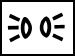
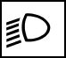
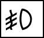
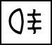
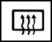
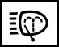
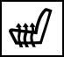
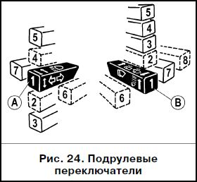
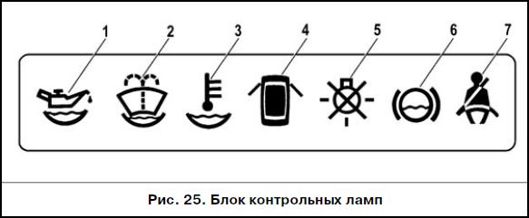

ОПИСАНИЕ АВТОМОБИЛЯ:Органы управления и приборы
КНОПОЧНЫЕ ВЫКЛЮЧАТЕЛИ
 - выключатель габаритных огней. Габаритные огни включаются и выключаются последовательным нажатием на клавишу.
При включении габаритных огней загорается сигнализатор в самой клавише.
 - выключатель света фар. Нажатием на клавишу ставятся под напряжение цепи фар.
Выключатели габаритных огней и света фар объединены в “переключатель наружного освещения”.
Механическая связь исключает возможность включения фар без предварительного включения габаритных огней и выключения габаритных огней при включенных фарах.
 - выключатель противотуманных фар. Противотуманные фары включаются в условиях ограниченной видимости (снег, туман и т.д.) нажатием на клавишу при включении габаритных огней.
При повторном нажатии на клавишу противотуманные фары и сигнализатор в самой клавише, предупреждающий об их включении, отключаются.
 - выключатель задних противотуманных огней. Нажатием на клавишу включаются противотуманные огни в задних фонарях и сигнализатор в клавише, если включено наружное освещение.
Повторным нажатием на клавишу выключателя лампы противотуманных огней и сигнализатор выключаются.
При выключении зажигания автомобиля противотуманные огни в задних фонарях выключаются автоматически.
 - выключатель обогрева заднего стекла. Обогрев заднего стекла включается нажатием на клавишу и отключается при повторном нажатии.
О включенном обогреве предупреждает сигнализатор в самой клавише.
- выключатель фароочистки. Устанавливается в вариантном исполнении. Имеет не фиксированное положение - удерживая кнопку в нажатом положении при включенном свете фар, включается одновременно фароомыв и фароочистка.
- выключатель обогрева передних сидений. Устанавливается в вариантном исполнении.
Обогрев сиденья включается нажатием на клавишу. Встроенный терморегулятор в автоматическом режиме поддерживает температуру элементов обогрева спинки и подушки сиденья в интервале 25- 31 гр.
Повторным нажатием или при выключении зажигания обогрев отключается.
ПОДРУЛЕВЫЕ ПЕРЕКЛЮЧАТЕЛИ
 Положения рычага “А” (рис. 24) переключателя указателей поворота и света фар означают:
1 - указатели поворота выключены; включен ближний свет фар, если переключателем наружного освещения поставлены под напряжение цепи фар;
2 - включены указатели левого поворота (не фиксированное положение);
3 - включены указатели левого поворота (фиксированное положение);
4 - включены указатели правого поворота (не фиксированное положение);
5 - включены указатели правого поворота (фиксированное положение);
6 - (на себя), включен дальний свет фар независимо от положения переключателя наружного освещения (не фиксированное положение);
7 - (от себя), включен дальний свет фар, если переключателем наружного освещения поставлены под напряжение цепи фар (фиксированное положение).
Положения рычага “В” переключателя стеклоочистителей и омывателя ветрового стекла означают:
1 - очистители и омыватель ветрового стекла выключен;
2 - включен прерывистый режим работы очистителей ветрового стекла (не фиксированное положение);
3 - включен прерывистый режим работы очистителей ветрового стекла (фиксированное положение);
4 - включена первая скорость очистителей ветрового стекла (фиксированное положение);
5 - включена вторая скорость очистителей ветрового стекла (фиксированное положение);
6 - (на себя), включен омыватель ветрового стекла (не фиксированное положение). Одновременно включаются и очистители ветрового стекла;
7 - (от себя), включен очиститель заднего стекла (двери задка) (фиксированное положение);
8 - (от себя), дополнительно включается омыватель заднего стекла (двери задка) (не фиксированное положение).
БОРТОВАЯ СИСТЕМА КОНТРОЛЯ

Бортовая система контроля устанавливается в вариантном исполнении (рис. 25).
1 - сигнализатор недостаточного уровня масла в картере двигателя. Загорается оранжевым светом, если уровень масла в картере двигателя опустился ниже метки “MIN” указателя. Перед доливкой масла проверьте, не произошла ли утечка масла из-за потери герметичности системы смазки.
2 - сигнализатор недостаточного уровня омывающей жидкости в бачке стеклоомывателя. Загорается оранжевым светом, если в бачке осталось менее 1 л омывающей жидкости.
3 - сигнализатор недостаточного уровня охлаждающей жидкости в расширительном бачке. Загорается оранжевым светом при понижении уровня охлаждающей жидкости на холодном двигателе ниже допустимого предела. Перед доливкой жидкости проверьте герметичность системы охлаждения. В вариантном исполнении индикация отсутствует.
4 - сигнализатор незакрытых дверей. Загорается красным светом при не закрытой двери (или дверей) автомобиля.
5 - сигнализатор неисправности ламп стоп-сигнала или габаритных огней. Загорается красным светом в случае неисправности лампы стоп-сигнала при нажатии на педаль тормоза или какой-либо лампы габаритного света при их включении.
6 - сигнализатор износа накладок колодок передних тормозов. Загорается оранжевым светом при нажатии на педаль тормоза и горит до выключения зажигания, если толщина накладок колодок передних тормозов уменьшилась до 1,5 мм.
7 - сигнализатор непристегнутых ремней безопасности (в вариантном исполнении). Устанавливается на часть автомобилей. Загорается красным светом, если не пристегнуты ремни безопасности водителя.
Функциональные режимы блока:
- выключен;
- режим ожидания;
- предвыездной контроль сигнализаторов;
- контроль параметров.
Блок находится в режиме “Выключен”, если ключ не вставлен в выключатель зажигания. В положении 0 (“Выключено”) ключа в выключателе зажигания блок переходит в “Режим ожидания”. Если при этом будет открыта дверь водителя, возникнет неисправность “Забытый ключ в выключателе зажигания” и звуковой сигнализатор блока в течение 5-7 с будет подавать прерывистый сигнал. Сигнал можно прервать или закрыв дверь, или вынув ключ, или повернув ключ в выключателе зажигания в положение I (“Зажигание”). В положении I ключа в выключателе зажигания блок переходит в режим “Предвыездной контроль сигнализаторов”, при котором для проверки их исправности на 3-5 с включаются все световые и звуковой сигнализаторы, а затем через паузу в 1 с блок переходит в режим “Контроль параметров” и при наличии неисправности производит сигнализацию по следующему алгоритму:
- световой сигнализатор того параметра, который вышел за пределы нормы, начинает мигать в течение 5-7 с, после чего переходит в режим постоянного свечения до устранения неисправности или возвращения ключа в выключателе зажигания в положение 0 (“Выключено”);
- одновременно со световым сигнализатором на 3 с включается звуковой сигнализатор;
- если при этом возникнет другая неисправность, то звуковая сигнализация и световая в режиме мигания начинают работать для последней неисправности, как более приоритетной, а световой сигнализатор предыдущей неисправности переходит в режим постоянного свечения.